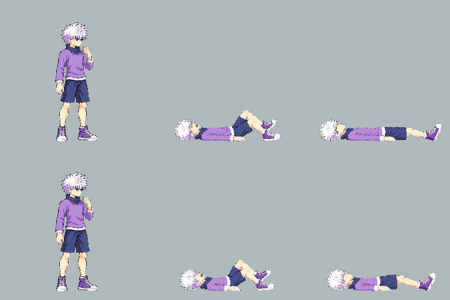
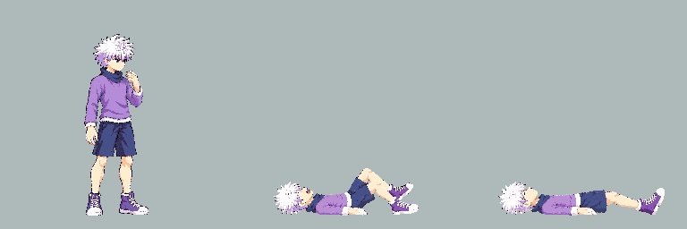
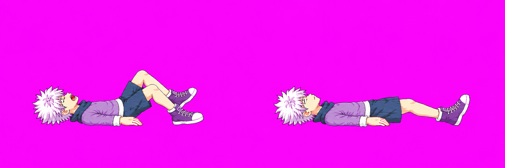
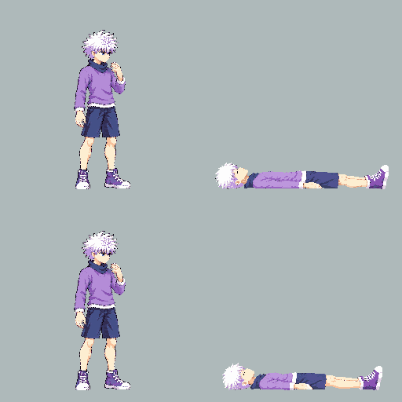
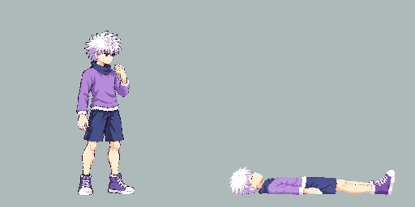
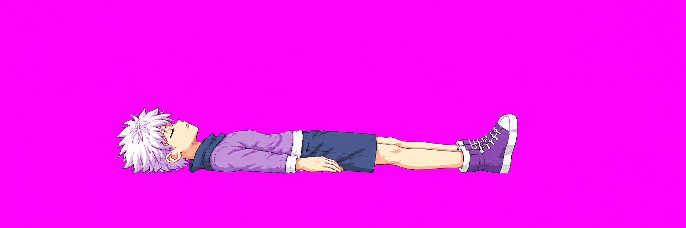
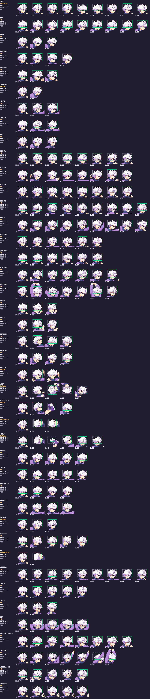
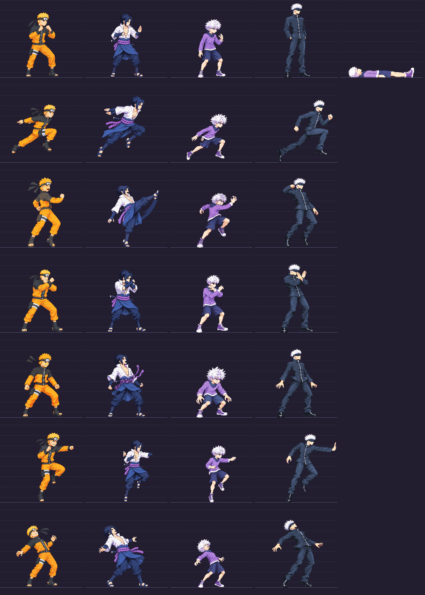

Killua: shorter lying torsos
Two new samples. All prior seven corrections remain approved. These new pixels need your approval; Claude must separately check lying-pose anatomy before packing them into the game.
Strict pack is blocked: down v06 / ko v07 are unmeasured. The game still uses the last successful atlas. No technical approval is implied.
Measurements, uncertainty and commands · Strict report
down v06 — NEEDS REVIEW
Shirt approximately36–39px in flexed impact f0;38–42px at rest f1. Idle40–43px. Landmarks ±3–4px; see uncertainty notes. Recommend approve killua down v06.
Old/new comparison: top held old image, bottom selected correction; approved idle left in both rows. Same256px cells.

Current all-frame contact: idle then f0 onward.

Selected raw source

ko v07 — NEEDS REVIEW
Shirt approximately40–43px. Idle40–43px. Landmarks ±3–4px; see uncertainty notes. Recommend approve killua ko v07.
Old/new comparison: top held old image, bottom selected correction; approved idle left in both rows. Same256px cells.

Current all-frame contact: idle then f0 onward.

Selected raw source

Scale diagnostic and historical cast lineup

